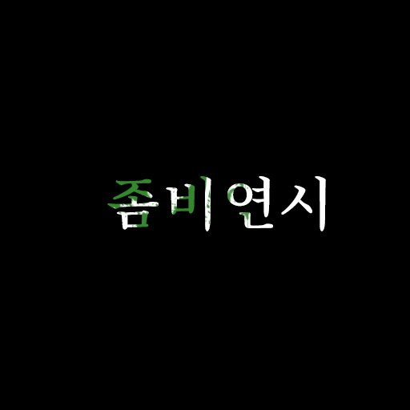

<!DOCTYPE html>
<html> </html>
<head> <title> 헉! </title> </head>

<body>
  <h1>
<a href="StraightBet.html">프로젝트: 좀비연시</a>
  </h1>

<ol>
  <li><a href="page1.html"> 1. 목록1</a></li>
  <li> <a href="page1.html"> 2. 목록1</a></li>
  <li><a href="page1.html"> 3. 목록1</a></li>
</ol>

<br>
<a href="https://ggm.hs.kr/" target="_blank" title="겜마고"> 경기게임마이스터고등학교 </a>

<table border="1">
  <tr>
네트워크 수행 점수
  </tr>
<tr>
  <td rowspan="2">1반</td>
  <td></td>
    <td>98.1%</td>
</tr>

<tr>
  <td>body</td>
    <td>98.1%</td>
</tr>

<tr>
  <td>html</td>
    <td>98.1%</td>
</tr>
<tr>
  <td>html</td>
    <td>98.1%</td>
</tr>
</table>

<br><br>
  1. 정체를 폭로당한 스파이더맨[편집]

  정체를 들킨 피터
  <p>
  데일리 뷰글의 J. 조나 제임슨 편집장이 <i>'스파이더맨의 정체가 피터 파커이며 그가 자신을 살해했다'</i> 라고 밝히는 <u>미스테리오</u>의 영상을 공개하는 뉴스 보도[1]와 함께 영화가 시작된다.[2] 매디슨 스퀘어 가든 전광판으로 이 뉴스를 본 피터는 크게 놀라고[3] 자신과 MJ를 추궁하는 군중들에게서 빠져나와[4][5] 퀸즈보로 다리 난간 꼭대기로 피신하지만 언론사의 헬리콥터들에게 포위당하고,[6] 가까스로 도망쳐 자기네 집으로 돌아온다.[7]

  집에서는 막 헤어진[8] 메이 큰엄마[9]와 해피의 실랑이가 벌어지고 있었고[10], 마침 피터가 들어오는 소리가 들려오자 해피는 피터를 부르며 피터의 방으로 문을 열고 들어가지만 해피와 메이는 슈트를 벗은 피터와 MJ가 같이 있는 걸 애정행각으로 착각하고[11] 거실로 나와 성에 대한 이야기까지 나눈다. 그 혼란한 상황 속에서 MJ와 피터는 집 밖의 사람들이 쳐들어오는 것을 방지하고 피터는 해피와 메이에게 왜 헤어졌냐고 묻지만 곧 뉴스에 나오는 현재 상황을 알게 된다. 집 주변을 에워싼 방송사 헬기를 통해 피터의 집 외곽이 TV에 생중계되기 시작한 것.
  </p>

  <p style media="margin-top:40px; color:#FFFF00">
    2. 꼬여버린 일상[편집]
    이후 뉴스를 보던 피터와 메이 앞에 대미지 컨트롤이 찾아와 피터를 체포한다.[12] 취조실로 끌려간 피터는 자신이 한 짓이 아니며 닉 퓨리가 거기 있었으니까 물어보라고 항변했지만, 경찰로부터 닉 퓨리는 1년 전부터 지구를 떠난 상태[13]라는 대답을 듣게 되자 당황한다. 그리고 메이, MJ, 네드도 잡혀오게 되는데[14] 다행히 실력 좋은 변호사 맷 머독의 도움으로 법적 혐의를 벗게 된다.[15] 다만 머독은 법보다도 여론의 재판이 더 힘들 거라고 경고하고 해피에게도 아주 유능한 변호사가 필요할 거라고 조언해준다.[16] 그리고 피터의 일상은 난장판이 된다. 스파이더맨 활동 중에는 'We believe Mysterio'를 외치는 미스테리오 추종자에게 녹색 페인트를 맞고, 등교길에는 기자들과 파파라치들이 깔려 시도 때도 없이 사진과 동영상이 찍히고 같은 학교 학생들에게도 관심이 집중된다.[17][18] 학교 내에 스파이더맨의 업적을 기리는 전시 코너도 생겼는데, 로저 해링턴 선생은 학생들이 만드는 걸 도와줬다고 하지만 옆에 있던 줄리우스 델 선생이 해링턴이 거의 혼자 다 만들었다고 불어버린다.[19]

    피터와 MJ는 사람들을 피해 학교 옥상으로 올라가 누워서 잠깐의 여유를 찾는다.[20] 둘은 영락없는 남친과 여친의 분위기를 보여주면서 대화를 나누지만, 곧바로 네드가 나타나 MIT에 입학하면[21][22] 세간의 간섭에서 벗어날 테니 거기서 셋이 같이 살자며 제안을 하고 피터, MJ, 네드는 모두 동의한다. 이후 거주지도 메이와 함께 해피의 안전가옥으로 옮겨서 파파라치와 미스테리오 추종자들의 공격도 일단 피하게 된다.[23] 하지만 피터, MJ, 네드 모두 최근의 논란 때문에 입학을 허가할 수 없다는 MIT의 불합격 통지서를 받게 되면서[24] 피터는 크게 낙심을 하는데, 마침 마법사 모양의 할로윈 전구 장식을 보고는 불현듯 닥터 스트레인지를 떠올리고 생텀을 찾아간다.[25]
    3. 멀티버스가 열리다[편집]
    피터는 생텀 대문 옆에 옆에 초인종 비슷한 것이 있는 것을 보고 그것을 누르려 하지만 곧 문은 자동으로 열리고, 생텀은 뜬금없이 온 집안이 눈과 얼음 천지였고 삽으로 눈을 치우는 사람 두 명도 있었다.[26] 곧이어 웡이 포탈에서 나오고, 피터가 어찌된 건지 묻자 웡은 시베리아로 향하는 포탈이 열려 눈보라가 들이쳤다고 답한다. 그리고 위층에서 스트레인지가 내려오면서[27] 누가 포탈에 달마다 해야 하는 봉인을 까먹어서 그렇다고 웡을 꼽준다.[28]

    피터는 스트레인지가 무슨 일이냐고 묻자 본론으로 들어가 자신의 정체가 드러나기 전 시점으로 시간을 되돌려 달라고 부탁하지만, 스트레인지는 시간에 간섭하는 것은 매우 위험한 일인데 수많은 사람들을 구하기 위해 어쩔 수 없이 그 난리를 벌인 것이라며 피터 하나를 위해서 그 짓을 또 할 수는 없다며 거절한다. 피터가 자신뿐만 아니라 자신을 안다는 이유만으로 피해를 본 애꿎은 사람들을 위해서라고 재차 설득하자 이젠 하고 싶어도 타임 스톤이 없어서 못한다며 다시 거절. 그런데 피터가 죄송하다며 이 일은 잊어달라고 한 다음 돌아가려고 하고, 웡이 "스트레인지가 잊는 데는 선수다"라고 덧붙이자 스트레인지는 그 말에서 '코프콜의 룬'이라는 기억 삭제 주문을 떠올린다. 스트레인지가 피터를 도와주겠다고 하자 웡은 그건 위험한 주문이라고 반대하지만 스트레인지의 대답에 의하면 카마르 타지의 마법사들은 파티 때의 흑역사를 지우는 데에 쓸 정도로 남발하는 주문인 모양. 웡은 스트레인지의 말에 바로 말리는 것을 포기하고 자신은 이 일에서 빼달라며 포탈을 열고 슬그머니 사라진다.

    주문을 망치는 피터
  </p>

  <table>

  </table>
  
  <!--Start of Tawk.to Script-->
<script type="text/javascript">
var Tawk_API=Tawk_API||{}, Tawk_LoadStart=new Date();
(function(){
var s1=document.createElement("script"),s0=document.getElementsByTagName("script")[0];
s1.async=true;
s1.src='https://embed.tawk.to/626b5ca7b0d10b6f3e6fe032/1g1pm3rjj';
s1.charset='UTF-8';
s1.setAttribute('crossorigin','*');
s0.parentNode.insertBefore(s1,s0);
})();
</script>
<!--End of Tawk.to Script-->
</body>
